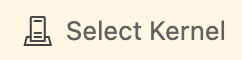
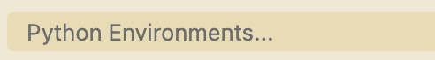
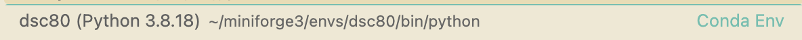

🙋♂️ Tech Support
Table of contents
- Introduction
- Environments and Package Managers
- Replicating the Gradescope Environment
- Working on Assignments
Introduction
In DSC 10, you worked on assignments on DataHub, a computing platform that already had all of the Python packages you needed installed. But in the real world, you’ll be expected to set up and maintain a Python environment locally – that is, on your own computer – and so that’s what we’ll have you do here. That’s right – no DataHub! You already have experience writing and running code locally from DSC 20 and DSC 30; setting up your environment for DSC 80 will be slightly more involved than it was there, but most of these steps only need to be done once.
There has been a lot written about how to set up a Python environment, so we won’t reinvent the wheel. This page will only be a summary; Google will be your main resource. But always feel free to come to a staff member’s office hours if you have a question about setting up your environment, using Git, or similar — we’re here to help.
This video walks through most of the steps here, but it’s not a substitute for reading this page carefully.
Environments and Package Managers
For this class, the software you’ll need includes Python 3.8, a few specific Python packages, Git, and a text editor.
Gradescope has an environment which it uses to autograde your work. You can think of an environment as a combination of a Python version and specific versions of Python packages that is isolated from the rest of your computer. In practice, developers create different environments for different projects, so that they can use different versions of packages in different projects.
We’re going to have you replicate the environment Gradescope has on your computer. The reason for this is so that your code behaves the same when you submit it to Gradescope as it does when you work on it on your computer. For example, our Gradescope environment uses numpy version 1.21.2; if you install a different version of numpy on your computer, for example, you might see different results than Gradescope sees.
How do you install packages, then? pip is a common choice, but even though it’s widely used, it lacks built-in support for creating isolated environments. This limitation makes it challenging to maintain version consistency and avoid conflicts between packages. Consequently, we do not recommend relying solely on pip install for environment management, as it may inadvertently introduce incompatible package versions.
conda, on the other hand, is a powerful tool that not only installs packages but also manages environments effortlessly. It allows you to create isolated environments and ensures compatibility among the packages within those environments.
The tool we’re going to use, though, is mamba, which is a wrapper around conda that is designed to be much faster. If you should need to install a new Python package, you can use the mamba command (once you have mamba installed). Inside the Terminal, type mamba install <package_name>, where <package_name> is replaced by the name of the package you want to install, and hit enter. However, you should only run mamba install once you’ve entered your dsc80 environment – more on this below.
Replicating the Gradescope Environment
Below, we’re going to walk you through how to create the same environment that Gradescope uses.
Step 1: Install mamba
The way to do this depends on whether you’re on a Unix-like platform (macOS or Linux) or on Windows.
Unix-like platforms (macOS or Linux):
Download the
mambainstaller. To do this, open your Terminal and run:curl -L -O "https://github.com/conda-forge/miniforge/releases/latest/download/Miniforge3-$(uname)-$(uname -m).sh"This will place a file named something like
Miniforge3-Darwin-arm64.shwherever you ran the command. If you get an error sayingcommand not found: curl, replacecurl -L -Owithwgetand re-run the same command.Run the installer. To do this, immediately after the last command, run:
bash Miniforge3-$(uname)-$(uname -m).sh
Windows:
- Download the Windows install script from here under “Miniforge3.” The file should be named
Miniforge3-Windows-x86_64.exeor similar. - Run the downloaded
.exefile. Follow the prompts, taking note of the options to “Create start menu shortcuts” and “Add Miniforge3 to my PATH environment variable”. The latter is not selected by default due to potential conflicts with other software. Without Miniforge3 on the path, the most convenient way to use the installed software (such as commandsmamba) will be via the “Miniforge Prompt” installed to the start menu. - Run the following command in your Anaconda Prompt:
start /wait "" Miniforge3-Windows-x86_64.exe /InstallationType=JustMe /RegisterPython=0 /S /D=%UserProfile%\Miniforge3
Make sure to run this command in the same folder that Miniforge3-Windows-x64_64.exe is! If that’s not the folder that your command line interface is looking in, you’ll need to cd there first, e.g. cd C:\Users\surajrampure\Desktop if that file is on your Desktop.
Step 2: Download environment.yml
This file contains the necessary details to configure your environment. If you take a look at it, you’ll see that it contains a specific Python version (python=3.8) along with specific package versions (like pandas==1.3.3 and requests==2.31.0, for example).
Step 3: Create a new conda environment
Yes, we said conda environment, even though we’re using mamba to create it.
To create the environment, in your Terminal or Anaconda Prompt, run:
mamba env create -f environment.yml
Note that if you put environment.yml in your Downloads or Desktop folder, you should replace environment.yml with the path to the file, for example: mamba env create -f /Users/yourusername/Desktop/environment.yml. Otherwise, you might get an error saying environment.yml does not exist.
Step 4: Activate the environment
To do so, run:
mamba activate dsc80
Where did the name dsc80 come from, you might ask? We defined it for you at the top of environment.yml with name: dsc80.
If you get an error saying mamba isn’t defined, try closing and reopening your Terminal first and then rerunning the command.
Working on Assignments
Activating the conda environment
The setup instructions above only need to be run once. Now, every time you work on DSC 80 assignments, all you need to do is run
mamba activate dsc80
in your Terminal or Anaconda Prompt. If you need to install any packages into your dsc80 environment using mamba install, make sure to activate the environment first.
If you’re using VSCode, you should select the Python kernel corresponding to the dsc80 environment to use it.
To open a Jupyter Notebook, use the jupyter notebook command in your Terminal or Anaconda Prompt.
Using Git
All of our course materials, including your assignments, are hosted on GitHub in this Git repository. This means that you’ll need to download and use Git in order to work with the course materials.
Git is a version control system. In short, it is used to keep track of the history of a project. With Git, you can go back in time to any previous version of your project, or even work on two different versions (or "branches") in parallel and "merge" them together at some point in the future. We'll stick to using the basic features of Git in DSC 80.
There are Git GUIs, and you can use them for this class. You can also use the command-line version of Git. To get started, you'll need to "clone" the course repository. The command to do this is:
git clone https://github.com/dsc-courses/dsc80-2024-ss2
This will copy the repository to a directory on your computer. You should only need to do this once.
Moving forward, to bring in the latest version of the repository, in your local repository, run:
git pull
This will not overwrite your work. In fact, Git is designed to make it very difficult to lose work (although it's still possible!).
Merge Conflicts
You might face issues when using git pull regarding merge issues and branches. This is caused by files being updated on your side while we are also changing the Git repository by pushing new assignments on our side. Here are some steps you can follow to resolve them:
NOTE: Whenever working with GitHub pulls, merges, etc., it’s a good idea to save your important work locally so that if you accidentally overwrite your files you still have the work saved. Save your work locally before following the steps below.
git statusshows the current state of your Git working directory and staging area. It’s a good sanity check to start with. You will probably see your project and lab files that you have worked on.git add .will add all your files to be ready to commit.git commit -m "some message of your choice"will commit the files, with some description in the quotations. This can be whatever you want, it won’t matter.
At this stage, if you git pull, it should work. You should double-check that you have new files, as well as that your old files are unchanged. If they are changed then you should be able to just copy-paste from your local backup. If this does not work then you may have merge conflicts, follow the next steps:
git checkout --theirs [FILENAME]will tell git that whenever a conflict occurs in[FILENAME]to keep your version. Run this for each file with a conflict.git add [FILENAME]to mark each file with a conflict as resolved.git rebase --continueorgit merge, depending on the setup.
Choosing a Text Editor or IDE
In this class, you will need to use a combination of editors for doing your assignments: The Python files should be developed with a text editor (for syntax highlighting and running doctests) and the data/results should be analyzed/presented in Jupyter Notebooks. Below is an incomplete list of IDEs you might want to try. For more information about them, feel free to ask the course staff.
If you’re curious, Suraj uses VSCode to edit .py files and the vanilla Jupyter environment to edit notebooks.
The JupyterLab text editor: see below. Can be used to edit both notebooks and .py files.
VSCode: Microsoft Visual Studio Code. Currently very popular, and can also be used to edit both notebooks and .py files.
sublime: A favorite text editor of hackers, famous for its multiple cursors. A good, general-purpose choice.
atom: GitHub’s editor. Pretty nice fully featured IDE. Can only work locally.
PyCharm (IntelliJ): Those who feel at home coding Java. Can only work locally.
nano: available on most unix commandlines (e.g. DataHub Terminal). If you use this for more than changing a word or two, you'll hate your life.
(neo)vim: lightweight, productive text-editor that might be the most efficient way to edit text, if you can ever learn how to use it. Justin Eldridge’s text editor of choice.
emacs: A text editor for those who prefer a life of endless toil. Endlessly customizable, it promises everything, but you’re never good enough to deliver.
Using VSCode to Run Jupyter Notebooks
Many students like to use VSCode to edit Jupyter Notebooks. If that’s you, then you’ll need to make sure to activate your dsc80 conda environment within your notebook in VSCode. Here’s how to do that.
- Open a Juypter Notebook in VSCode.
- Click “Select Kernel” in the top right corner of the window.
 - Click “Python Environments” in the toolbar that appears in the middle.
 - Finally, click “dsc80 (Python 3.8.18)”.
